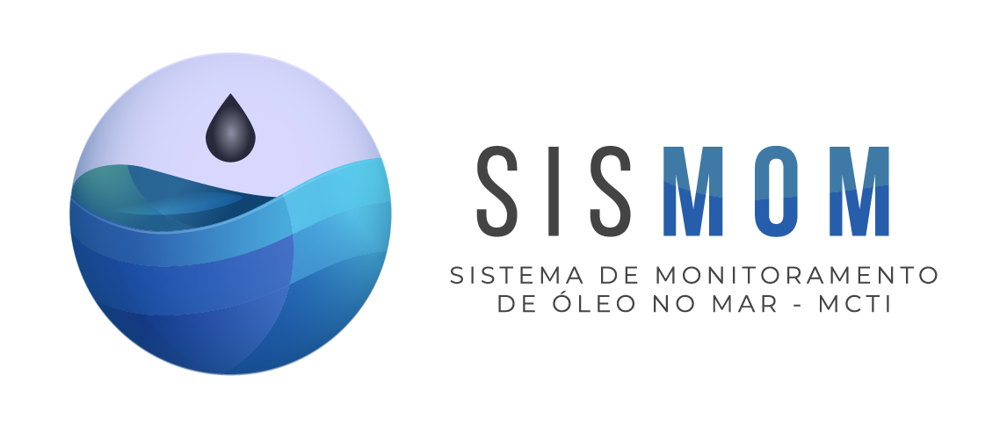
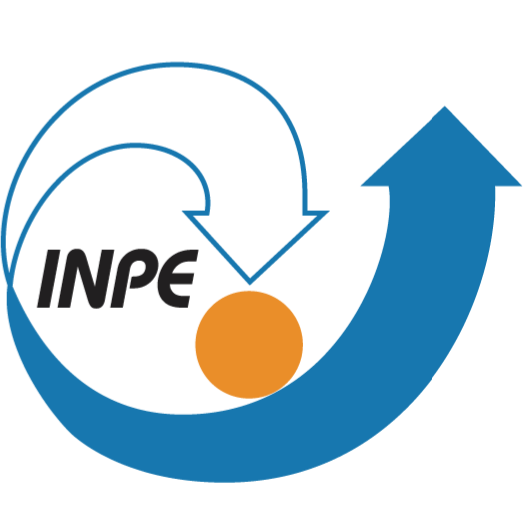

<main class="viewport">
<div class="dashboard-frame" id="dashboardFrame">
<header class="topbar">
<div class="header-identity">
<div class="brand-suite">

<span class="brand-divider"></span>

<span class="brand-divider"></span>

</div>
<div class="title-block">
<span>{{PROJECT_LABEL}}</span><h1>{{META_TITLE}}</h1><p>{{SUBTITLE}}</p>
</div>
</div>
<div class="clock-block">
<span aria-hidden="true" class="clock-icon">◷</span>
<span><strong id="currentDate">--/--/----</strong><small><span id="currentTime">--:--:--</span> UTC</small></span>
<button aria-label="Alternar tela cheia" class="icon-button" id="fullscreenButton" title="Tela cheia" type="button">⛶</button>
</div>
</header>
<div class="dashboard">
<section class="panel overview-panel">
<div class="panel-heading overview-heading">
<div>
<span class="eyebrow" id="productSatelliteLabel">PRODUTO SAR</span>
<h2 id="productHeading">Carregando catálogo de produtos…</h2>
<small class="product-full-name" id="productFullName">—</small>
</div>
<div class="product-heading-actions">
<select aria-label="Selecionar produto SAR" hidden id="productSelect"></select>
<span class="status-chip" id="productStatus"><i></i> AGUARDANDO</span>
</div>
</div>
<div class="product-kpis">
<article class="acquisition-kpi" id="acquisitionKpi">
<button aria-expanded="false" aria-haspopup="dialog" class="acquisition-date-button" id="acquisitionDateButton" type="button">
<span>Aquisição</span><strong><span id="acquisitionDateValue">--/--/----</span> <span aria-hidden="true" class="calendar-icon">▣</span></strong>
</button>
<div aria-label="Datas de aquisição disponíveis" class="acquisition-calendar" hidden id="acquisitionCalendar" role="dialog">
<div class="calendar-heading"><button aria-label="Mês anterior" id="calendarPreviousMonth" type="button">‹</button><strong id="calendarMonthLabel">—</strong><button aria-label="Próximo mês" id="calendarNextMonth" type="button">›</button></div>
<div aria-hidden="true" class="calendar-weekdays"><span>D</span><span>S</span><span>T</span><span>Q</span><span>Q</span><span>S</span><span>S</span></div>
<div class="calendar-days" id="calendarDays"></div><p><i></i> Data com produto disponível</p>
</div>
</article>
<article class="time-kpi"><span>Intervalo UTC</span><strong id="productTimeUtc">—</strong><small id="productTimeBrt">—</small></article>
<article><span>Modo</span><strong id="productMode">—</strong></article>
<article><span>Polarização</span><strong id="productPolarization">—</strong></article>
<article><span>Recortes</span><strong id="productPatchCount">—</strong></article>
<article><span>CFAR+YOLO</span><strong class="combined-total" id="productDetectionCount">—</strong><small id="productUniqueCount">Geral: —</small></article>
</div>
<div class="overview-stage">
<div aria-label="Enquadramento do mapa" class="map-view-controls" data-map-control="view" role="group">
<button id="zeeButton" type="button">ZEE completa</button><button class="active" id="productButton" type="button">Produto</button>
</div>
<div aria-label="Produtos disponíveis na data" class="daily-product-selector" data-map-control="daily-products" hidden id="dailyProductSelector"></div>
<div aria-label="Filtrar métodos de detecção" class="detection-layer-controls" data-map-control="detections" role="group">
<button data-detection-filter="all" type="button">Todas <b>0</b></button>
<button data-detection-filter="cfar" type="button">CFAR <b>0</b></button>
<button data-detection-filter="yolo" type="button">YOLO <b>0</b></button>
<button class="active" data-detection-filter="combined" type="button">CFAR+YOLO <b>0</b></button>
</div>
<label class="sar-opacity-control" data-map-control="opacity" for="sarOpacity"><span>Opacidade SAR</span><input aria-label="Opacidade da imagem SAR" id="sarOpacity" max="100" min="0" step="1" type="range" value="85"/><b id="sarOpacityValue">85%</b></label>
<div aria-label="Mapa do produto SAR e da Amazônia Azul" class="zee-map" id="zeeMap"></div>
<div class="viewer-alert" hidden id="viewerAlert"></div>
<div class="overview-caption">
<span><b class="legend-swatch zee"></b> Limite da ZEE</span><span><b class="legend-swatch pce"></b> Plataforma Continental Estendida</span><span><b class="legend-swatch raster"></b> Imagem SAR completa</span><span><b class="legend-swatch detected"></b> Com CFAR</span><span><b class="legend-swatch selected"></b> Selecionado</span>
</div>
</div>
</section>
<section class="right-grid">
<section class="panel crop-panel">
<div class="panel-heading crop-heading">
<div class="crop-title"><span class="eyebrow">RECORTE COM DETECÇÃO</span><span class="patch-pill" id="patchPill">—</span></div>
<div class="crop-controls"><button aria-label="Detecção anterior" id="previousButton" type="button">‹</button><span><b id="patchCounter">0 de 0</b><small>AUTOMÁTICO • {{AUTO_INTERVAL_SECONDS}} s</small></span><button aria-label="Próxima detecção" id="nextButton" type="button">›</button></div>
</div>
<div class="sar-stage">
<div class="latitude-axis"><span class="orientation-label">N ↑</span><span id="latNorth">—</span><span id="latMid">—</span><span id="latSouth">—</span></div>
<div class="sar-visual">
<div class="sar-image-wrap" id="sarImageWrap"><div aria-label="Detecções no recorte" class="detection-frames" id="detectionFrames"></div><div class="preview-message" id="previewMessage">Selecione um produto com detecções.</div></div>
<div class="longitude-axis"><span id="lonWest">—</span><span id="lonMid">—</span><span id="lonEast">—</span></div>
</div>
<div class="sigma-colorbar"><strong id="colorbarQuantity">σ⁰ VV</strong><span class="colorbar-unit">dB</span><div class="colorbar-scale"><i class="colorbar-gradient"></i><span style="top:0%">0</span><span style="top:20%">−5</span><span style="top:40%">−10</span><span style="top:60%">−15</span><span style="top:80%">−20</span><span style="top:100%">−25</span></div></div>
</div>
<div class="overlay-legend"><span><b class="legend-box cfar"></b>CFAR</span><span><b class="legend-box combined"></b>CFAR+YOLO</span><span><b class="legend-box yolo"></b><span id="overlayYoloText">YOLO: sem dados</span></span><span><b class="legend-box ais"></b><span id="overlayAisText">AIS: sem AIS</span></span></div>
</section>
<aside class="details-column">
<section class="panel details-panel">
<div class="panel-heading compact"><h2>INFORMAÇÕES DO RECORTE</h2></div>
<dl class="compact-details">
<div><dt>Recorte</dt><dd><b class="badge patch" id="infoPatch">—</b></dd></div><div><dt>Arquivo</dt><dd id="infoFile">—</dd></div><div><dt>Método</dt><dd><b class="status-inline" id="infoCfarStatus">—</b></dd></div>
<div><dt>Dimensão</dt><dd class="dimension-area"><span id="infoSize">—</span><small id="infoArea">—</small></dd></div><div><dt>CRS</dt><dd id="infoCrs">—</dd></div><div><dt>Tempo SNAP</dt><dd id="infoSnap">—</dd></div>
</dl>
</section>
<section class="panel details-panel">
<div class="panel-heading compact"><h2>DETECÇÃO DO ALVO</h2><span class="count-badge" id="detectionCountBadge">0 alvos</span></div>
<dl class="compact-details detection-details">
<div><dt>Latitude</dt><dd id="detLat">—</dd></div><div><dt>Longitude</dt><dd id="detLon">—</dd></div><div><dt>Área</dt><dd id="detArea">—</dd></div><div><dt>Pico σ⁰</dt><dd id="detPeak">—</dd></div><div><dt>Limiar</dt><dd id="detThreshold">—</dd></div><div><dt>Comprimento</dt><dd id="detLength">—</dd></div><div><dt>YOLO</dt><dd><b class="badge yolo" id="detYolo">Sem dados</b></dd></div><div><dt>AIS</dt><dd><b class="badge ais" id="detAis">Sem AIS</b></dd></div>
</dl>
</section>
</aside>
</section>
</div>
<footer class="statusbar"><span id="footerSource">SisMOM • {{META_TITLE}}</span><span id="footerCounts"><i></i> CFAR: — • YOLO: — • AIS: —</span><span id="footerAcquisition">—</span></footer>
</div>
</main>
